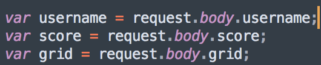
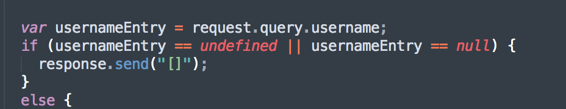

This product is a game center for the game 2048. It is a server that stores all usernames, scores, and grids for people who play the game. The purpose of this assignment is to find security and privacy vulnerabilities with the server and recommend solutions for these issues.
I used curl on terminal, my web browser and its developer tools, and the source code for the server.
The most serious vulnerability I found was cross-site scripting (XSS). XSS is when a user inputs JavaScript code instead of real data (in this case, their username), causing this code, whatever it may be, to be executed when someone visits the page. This server does nothing to protect against XSS, which is one of the most common security vulnerabilities on the web. This would allow someone to inject any JavaScript code they wanted to in the site, and anyone who visited it would be affected. I also was able to access all of the scores and 2048 grids in the database when accessing one of the routes that is only supposed to allow access to one person's, which could be dangerous if the database was holding more private information. Lastly, Cross-Origin Resource Sharing (CORS) was enabled for all sites, which means that anything attempting to access the server can do so, which again could be problematic with more private information.
-
Issue 1: XSS
The first issue I found was cross-site scripting (XSS).
I found this issue when using curl to sumbit data. It was located in the server, which did not validate user input. As seen below, it simply takes in whatever the user inputs as its username, which is later inserted into the database.

I found this issue by using curl on terminal to submit a username, score, and grid to the server. However, instead of a true username, I used JavaScript code to simply create a blank alert box:
curl --data "username=<script>alert()</script>&score=1&grid={}" http://localhost:3000/submit
When you go to the site, the browser reads this code and executes it, causing an alert box to pop up:
This is a severe issue. It is one of the OWASP Top 10 security risks and is a common and severe problem. It allows anyone to inject any JavaScript code into the server, which is then executed when someone visits the site. I simply made a blank alert box pop up, but this vulnerability could be abused to access information stored in the browser, inject malicious code into the site, or redirect the user to a malicious site.
To resolve this issue, the server should validate user input, since user input should never, ever be trusted. The input should be stripped of any special characters before being put into the database. This would then make the username something like scriptalertscript, which would not cause the browser to execute any JavaScript code.
-
Issue 2: Injection Attack
The second issue I found was vulnerability to an injection attack.
I found this issue when accessing /scores.json on my web browser. It was located in the server, which did not validate user input in the query string of the route /scores.json. As seen below, the server takes in whatever the query string username is, and as long as a username exists, it finds it in the database. There is no further validation of the user's input.

I found this issue by going to /scores.json and then using the query string "?username[$ne]=batman". The [$ne] operator is the "not equal" operator, so this query returns everything in the database that is not equal to batman; in this case, that is everything in the database.
This is not a severe issue for this product, but can be in other applications. This project contains another route (GET /) which returns all users' data, which is what I was able to access with the injection attack. For this product, the only data I got access to that was not otherwise accessible was the grids for every user; however, these are also accessible through the /scores.json if you know someone's username. However, in other applications, this type of attack could have much more serious implications. For example, if the server stored private data and only allowed you to access your own data by typing in your username, I would have been able to see all of the private data for every user.
To resolve this issue, you can again strip out special characters or strip out anything that begins with the $ character. This would prevent any operators from being used to access private data.
-
Issue 3: CORS wildcard *
The third issue I found was the CORS header.
I found this issue in the source code of the product.
I found this issue by closely examining the source code (seen below). The server allows CORS with the header "Access-Control-Allow-Origin" set to the wildcard character, which is the * symbol. This means that the server can be accessed by every origin. In other words, every site can send and request data from the server, since this header is in both the GET and POST routes. With a lot of types of data, you don't want it to be accessible to anyone on the web.
This is not a severe issue for this application, since it is not storing private and sensitive data. However, many web applications that do store private data cannot have CORS enabled for any site, since this would mean that anyone would be able to access the data in the database. CORS bypasses the same-origin policy, which is put in place to keep things more secure. So, when bypassing this (or any) security measure, it is important to pay close attention to who should have access to your data and who you are allowing to access your data. Even if it is simpler to just use the wildcard *, it might be necessary to allow only certain trusted sites access.
To resolve this issue, you can allow only specific sites to access your server. For example, instead of the wildcard character, you could write:
response.header("Access-Control-Allow-Origin", "http://example.com");
This would allow only example.com to access the server.
Since this product was not storing highly sensitive or private information, many of these security risks and vulnerabilities were not severe. However, they could pose large threats if the data used by the server was more private, and even if the server became more widley used; people may not want their username and scores available to anyone on the web. In addition, cross-site scripting is a big security risk, because anyone who visits the site can be affected and it can be exploited in any number of different malicious ways. These issues are simple to resolve and don't require much code, so it is important that they are addressed not just in this product but in everything on the web. 25% of web applications are vulnerable to 8 of the OWASP Top Ten (see last link under "References"), so clearly, web security is a large and ongoing issue. Many of these applications are likely storing sensitive data that should be protected. Methods to protect against these most common security flaws are widely available, so people should use them and make sure that any product made publicly available is, at the very least, protected against the most common and most severe security vulnerabilities.